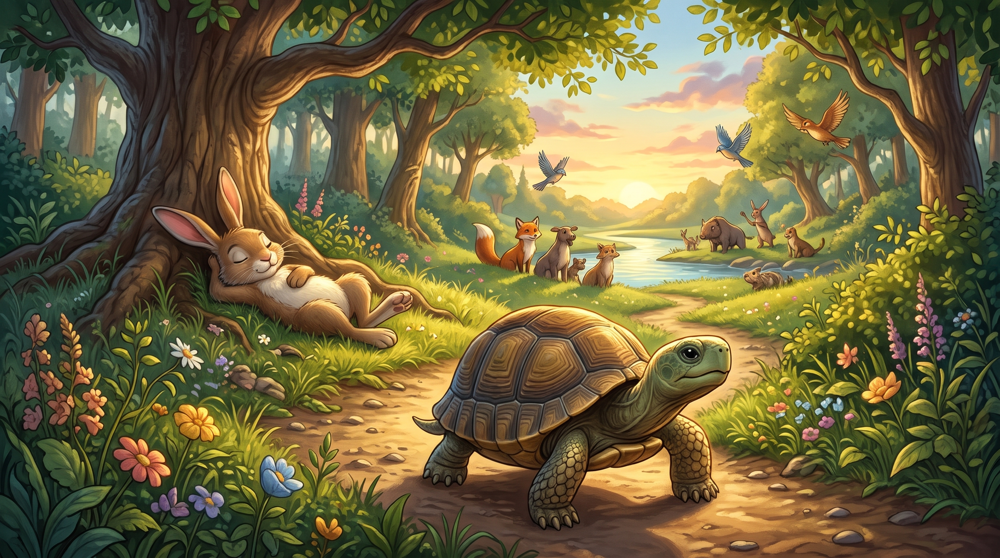

📖'">Ο Λαγός και η Χελώνα
Μια φορά κι έναν καιρό, μέσα σε ένα καταπράσινο δάσος, ζούσε ένας λαγός που καυχιόταν διαρκώς σε όλα τα ζώα για το πόσο γρήγορα έτρεχε.
«Κανείς δεν μπορεί να με νικήσει στο τρέξιμο!» έλεγε με ύφος γεμάτο περηφάνια. «Είμαι το πιο γρήγορο ζώο σε ολόκληρο το δάσος!»
Τα άλλα ζώα είχαν κουραστεί να ακούνε τα μεγάλα του λόγια. Μια μέρα, η χελώνα, που περπατούσε αργά και σταθερά κουβαλώντας το βαρύ της καβούκι, τον πλησίασε ήσυχα και του είπε: «Αν θέλεις, τρέχω εγώ μαζί σου σε έναν αγώνα δρόμου».
Μόλις το άκουσε ο λαγός, ξέσπασε σε τρανταχτά γέλια: «Εσύ; Θέλεις να αγωνιστείς μαζί μου; Μα μέχρι να κάνεις εσύ ένα βήμα, εγώ θα έχω φτάσει στην άλλη άκρη του βουνού!»
«Μην γελάς τόσο πολύ», απάντησε ψύχραιμα η χελώνα. «Ας βάλουμε ένα στοίχημα και θα δούμε στο τέλος ποιος θα νικήσει».
Τα ζώα του δάσους ενθουσιάστηκαν με την ιδέα. Όρισαν τη γραμμή εκκίνησης κάτω από μια μεγάλη βελανιδιά και τη γραμμή του τερματισμού δίπλα στο ποτάμι. Η σοφή αλεπού ανέλαβε να δώσει το σύνθημα.
«Ένα, δύο, τρία... φύγατε!» φώναξε η αλεπού.
Ο λαγός πετάχτηκε σαν βέλος κι εξαφανίστηκε σε λίγα δευτερόλεπτα μέσα στη σκόνη. Η χελώνα ξεκίνησε με τον δικό της αργό, αλλά απόλυτα σταθερό ρυθμό, κοιτάζοντας μπροστά και χωρίς να σταματά καθόλου.
Σε λίγη ώρα, ο λαγός είχε φτάσει σχεδόν στη μέση της διαδρομής. Γύρισε πίσω, κοίταξε, αλλά η χελώνα δεν φαινόταν πουθενά.
«Τι ανόητη!» σκέφτηκε γελώντας. «Έχω τόσο πολύ χρόνο μπροστά μου που μπορώ να ξαπλώσω κάτω από αυτό το σκιερό δέντρο, να φάω λίγο δροσερό γρασίδι και να πάρω έναν υπνάκο. Ακόμα κι αν με πλησιάσει, με δύο άλματα θα την περάσω και θα κόψω πρώτος το νήμα».
Έτσι, ο λαγός ξάπλωσε στο μαλακό χορτάρι, έκλεισε τα μάτια του και τον πήρε ένας βαθύς ύπνος.
Η ώρα περνούσε. Ο ήλιος άρχισε να γέρνει πίσω από τα βουνά. Η χελώνα συνέχιζε να προχωράει: βήμα το βήμα, αγάλι-αγάλι, χωρίς να απογοητεύεται, χωρίς να βιάζεται και κυρίως χωρίς να σταματά πουθενά.
Πέρασε δίπλα από το δέντρο όπου ο λαγός ροχάλιζε ανενόχλητος. Δεν έκανε τον παραμικρό θόρυβο και συνέχισε την πορεία της ίσια προς το ποτάμι.
Όταν ο λαγός ξύπνησε ξαφνικά, τεντώθηκε, χασμουρήθηκε και κοίταξε πίσω του στο μονοπάτι. «Ακόμα δεν φάνηκε η αργοκίνητη!» είπε χαμογελώντας.
Όμως, όταν γύρισε το βλέμμα του προς τη γραμμή του τερματισμού, τα μάτια του άνοιξαν διάπλατα από τρόμο: η χελώνα απείχε μόλις λίγα εκατοστά από το νήμα, ενώ όλα τα ζώα του δάσους χειροκροτούσαν και ζητωκραύγαζαν γεμάτα ενθουσιασμό!
Ο λαγός πετάχτηκε πάνω και άρχισε να τρέχει με όλη του τη δύναμη, πηδώντας πέτρες και θάμνους. Ήταν όμως πολύ αργά. Με ένα τελευταίο, αποφασιστικό βήμα, η χελώνα πέρασε τη γραμμή του τερματισμού πρώτη!
Όλα τα ζώα σήκωσαν τη χελώνα ψηλά για να πανηγυρίσουν τη νίκη της. Ο λαγός έσκυψε το κεφάλι του ντροπιασμένος, καταλαβαίνοντας το λάθος του.
Η χελώνα τον κοίταξε με καλοσύνη και του είπε: «Βλέπεις; Δεν αρκεί να είσαι γρήγορος αν καυχιέσαι και τεμπελιάζεις. Η υπομονή, η επιμονή και η σταθερή προσπάθεια είναι αυτά που σε φτάνουν στον στόχο σου!»